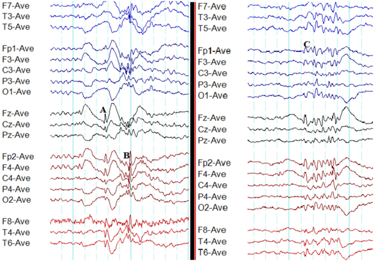

Comparação · Pág. 10 de 20
Mioclônica, atônica e ausência: três generalizadas que não são TCG
Qual generalizada pode não roubar a consciência?
A TCG é a generalizada longa do dia a dia. Mas há três generalizadas curtas e sutis — mioclônica, atônica e ausência — que não seguem a timeline tônico-clônica. Uma delas, a mioclônica, pode sequer tirar a consciência.
Mioclônica
Abalo curto, não ritmado (≠ clônica, que tem ritmo que desacelera). Pode preservar a consciência — a exceção que cai. Queixa: o “desastrado” (o copo voa da mão).
Atônica
Estimulação de vias inibitórias → perda de tônus → queda. Duração curta. O sinal motor é o oposto do excesso: é o apagamento do tônus.
Ausência
Não mexe primariamente na motricidade; ativa o sono-vigília → perda de consciência por poucos segundos. Olhar perdido, pálpebra cai um pouco; recupera onde parou. Queixa: colégio.
Mioclônica
Mioclônica: abalos não ritmados (≠ clônica, que tem ritmo que desacelera até o fim). Analogia: o “susto” do sono (mioclonias não epilépticas do adormecer). Fisiologia: estímulo excitatório seguido imediatamente de gatilho inibitório → abalo curto. A mioclônica generalizada pode não perder consciência — exceção importante. Pode se repetir; história de “desastrado” (o copo voa da mão).
Atônica
Atônica: estimulação de vias inibitórias → perda de tônus → queda; duração curta.
Ausência
Em geral mioclônica, atônica e ausência são sutis e curtas; a TCG é a longa do dia a dia. Ausência [quadro rico]: não mexe primariamente na motricidade; ativa o sono-vigília → perda de consciência por poucos segundos (~20 s no exemplo didático). Face: olhar perdido, pálpebra cai um pouco; recuperação ao ponto em que parou.
Frequência e escola
VFP [108]: as ausências podem ocorrer centenas de vezes/dia (ex.: até 300×/dia no discurso — ordem de grandeza, não cutoff normativo). Impacto escolar: fragmentos de informação; “1+1” vira “4” porque a criança desligou no meio.
Regra de ouro: a grande queixa familiar da ausência infantil é o colégio (notas, “desatenção”, bagunça).
Tabela comparativa
| Mioclônica | Atônica | Ausência | |
|---|---|---|---|
| Motor | abalo curto não ritmado | perda de tônus / queda | pouco / nenhum motor |
| Consciência | pode preservar | curta | perde segundos |
| Duração | curtíssima | curta | ~segundos (ex. 20 s) |
| Queixa | “desastrado” | queda | escola |

Resumo operacional
Mioclônica curta (± consciência); atônica = queda; ausência = segundos + escola; frequência pode ser centenas/dia.
Por que importa
A ausência vira “TDAH” na escola se ninguém ler o padrão de desligar; a mioclônica vira “clumsiness” se ninguém lembrar que pode preservar consciência.
Quiz
Conexão
O diagnóstico amarra anamnese + EEG + imagem — e há um traçado que confirma e um que exclui.